ARSIP &
MEMORI KOTA
Embrio di Musim Hujan (Awal 2024)
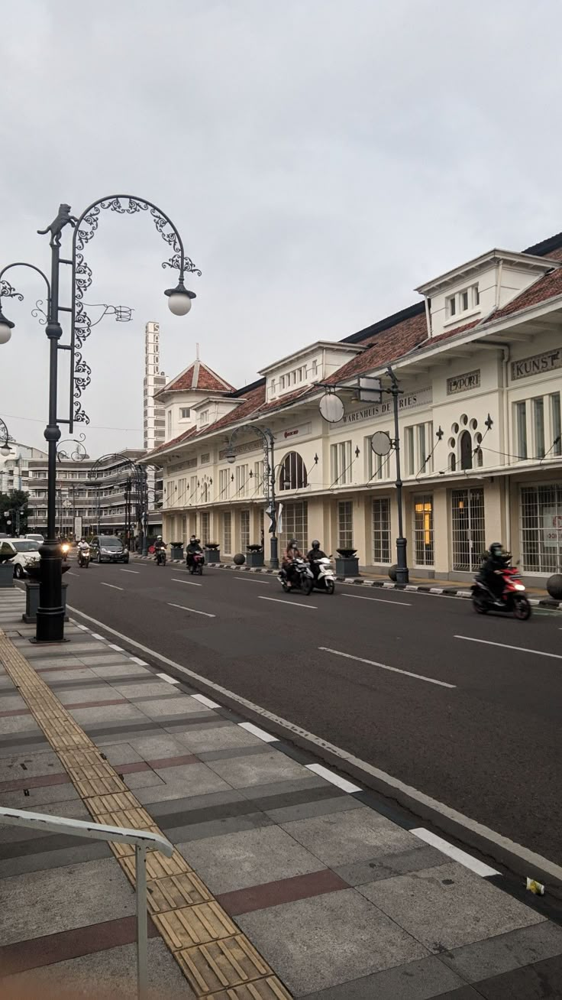
Bandung, Februari 2024. Aroma tanah basah sisa hujan sore masih tercium kuat menyusup lewat ventilasi sebuah kamar sederhana. Saat itu, Reyhan (Rey) dan Rajib (Jib) masih duduk di bangku kelas 2 SMP, semester 2. Wajah mereka masih polos, namun isi kepala mereka sudah memberontak.
Menjelang bulan puasa, di mana hiruk-pikuk orang berburu baju lebaran mulai terasa, mereka berdua merenung di tengah tumpukan buku pelajaran. "Kenapa kita cuma jadi penonton?" celetuk salah satu dari mereka. Rey dan Jib memiliki keresahan yang sama: mereka ingin memakai sesuatu yang mereka banggakan, bukan sekadar menempelkan logo orang lain di dada.
Sebuah ide liar lahir: membuat brand sendiri. Visi mereka saat itu masih mentah, sebatas ingin terlihat keren saat kumpul keluarga atau nongkrong buber (buka bersama). Namun, realitas adalah dinding tebal yang sulit ditembus. Sebagai pelajar dengan uang saku pas-pasan yang habis untuk jajan cilok dan kuota internet, modal adalah halusinasi. Ide itu hanya berakhir sebagai sketsa kasar di belakang buku tulis—sebuah mimpi prematur yang terpaksa tertidur sebelum sempat bernapas.
Jeda yang Memisahkan
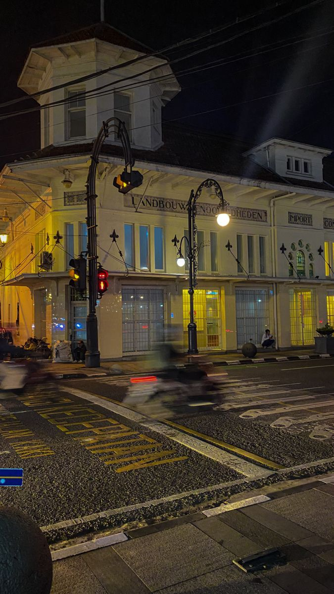
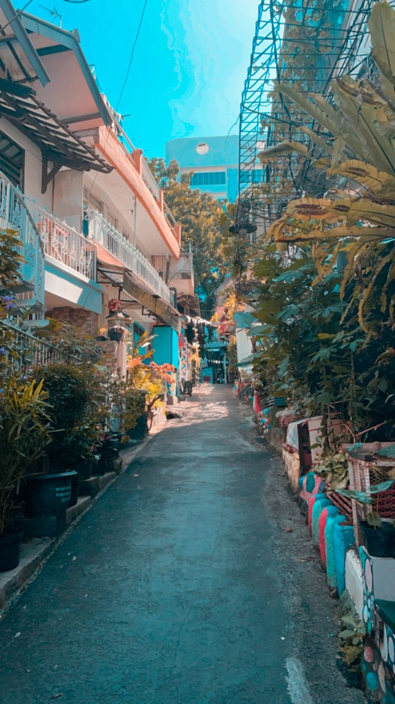
Waktu berjalan tanpa ampun. Rencana membuat brand terkubur oleh rutinitas akademis. Ujian kenaikan kelas, drama masa puber, dan tuntutan orang tua membuat naskah mimpi mereka berdebu.
Hingga tiba di pertengahan 2025, sebuah persimpangan besar memisahkan jalan hidup mereka. Rajib melanjutkan sekolah ke jenjang berikutnya, masuk ke lingkungan baru yang heterogen dan mulai melek tren fashion Bandung yang berkembang pesat.
Mimpi tentang brand baju itu seolah lenyap ditelan bumi. Masing-masing terasing dalam realitas baru yang tak lagi bersinggungan. Jejak sketsa di belakang buku tulis itu menguning, menjadi artefak dari sebuah ambisi yang dianggap telah mati.
Universitas Layar Retak
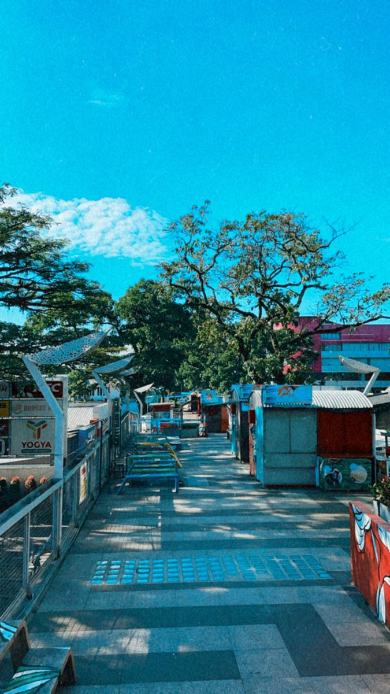
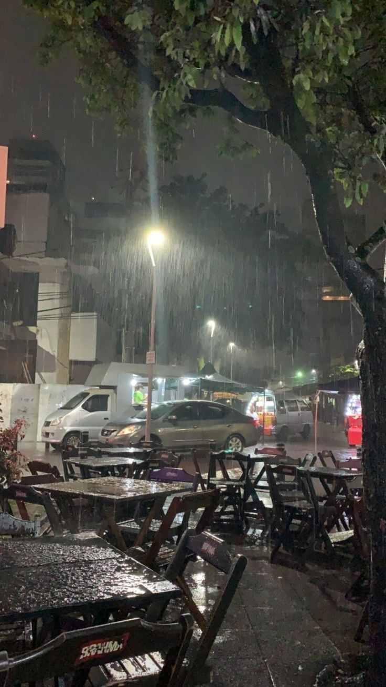
Meski tidak berseragam sekolah, Reyhan tidak lantas berdiam diri. Di dalam kamarnya yang sempit, dunia Rey menyusut menjadi seluas 6 inci—ukuran layar smartphone milik orang tuanya. Tanpa laptop canggih, tanpa tablet grafis mahal, Rey memulai perjuangan sunyinya.
Ia belajar secara otodidak. Jempolnya menari di atas layar yang retak seribu, belajar menarik garis vector di aplikasi desain mobile. Matanya sering perih menatap piksel terlalu lama. Tak cukup sampai di situ, rasa ingin tahunya merambat ke dunia coding.
Setiap desain yang ia hasilkan di HP itu adalah arsip pribadinya. Ia tidak tahu untuk apa semua itu, ia hanya tahu ia harus terus berkarya agar otaknya tidak tumpul. Rey sedang menajamkan pedang dalam diam, menunggu pertempuran yang entah kapan akan datang.
— Sebuah dedikasi di balik keterbatasan layar enam inci.
Reuni Warkop & Pencari Wi-Fi
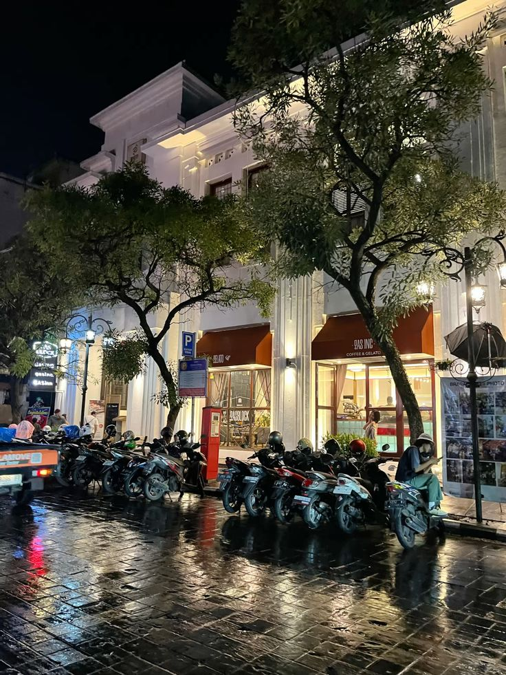
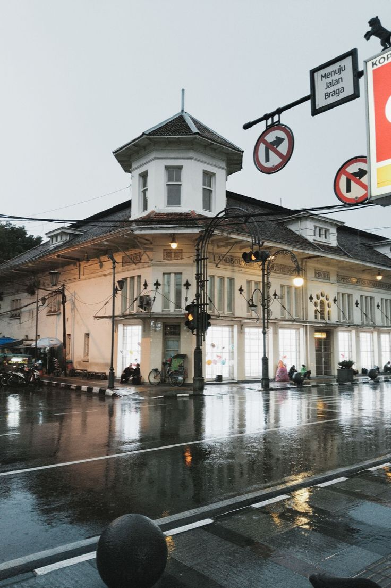
Suatu sore di penghujung tahun 2025. Langit Bandung sedang mendung gelap. Di sebuah warkop sederhana yang menyediakan fasilitas Wi-Fi gratis, Rey sedang duduk memojok. Di depannya ada gelas es teh yang sudah mencair saking lamanya didiamkan. Ia sedang fokus mengunduh font dan aset desain menggunakan Wi-Fi warkop karena kuota HP-nya sekarat.
Tiba-tiba, sebuah motor berhenti di depan warkop. Pengendaranya membuka helm, merapikan rambut, lalu masuk memesan kopi. Saat menoleh mencari tempat duduk, mata pengendara itu membelalak. "Lah? Rey?"
Rey mendongak, matanya menyipit sebentar sebelum mengenali sosok itu. "Eh... Jib? Woi!" Rajib menghampiri meja Rey sambil membawa kopinya. "Gila, kemana aja lu? Sombong bener nggak pernah keliatan. Gue denger lu nggak lanjut sekolah?"
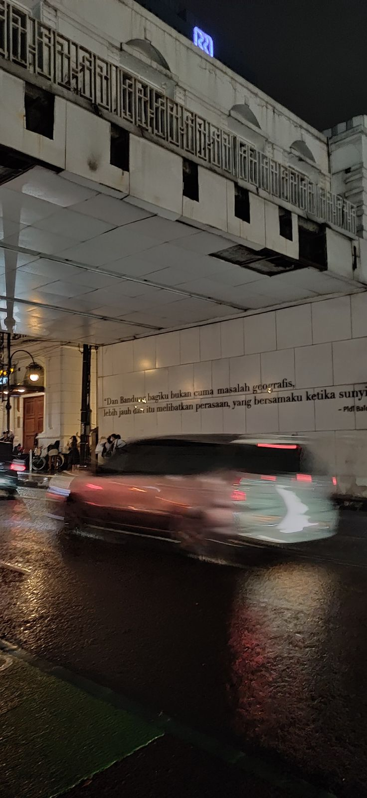
— Takdir yang bertaut kembali.
"Yoi, Jib. Biasalah, menikmati hidup," jawab Rey santai sambil menggeser duduknya, memberi ruang untuk Rajib. "Lu gimana? Lancar sekolahnya? Makin gaya aja lu liat-liat." Obrolan basa-basi mengalir. Mereka tertawa membahas masa SMP, guru-guru galak, dan teman-teman lama.
Sampai akhirnya mata Rajib melirik ke layar HP Rey yang masih menyala, menampilkan sebuah desain grafis yang rumit. "Lu... lagi ngapain?" tanya Rajib, menunjuk layar HP Rey. "Game baru?"
"Bukan," Rey memperlihatkan layarnya. "Iseng aja. Belajar desain. Gue lagi nyoba bikin logo-logoan." Rajib mengambil HP itu. Matanya menelusuri garis-garis desain yang dibuat Rey. Sebagai anak yang sekarang melek fashion, Rajib tahu barang bagus saat melihatnya.
"Ini lu bikin di HP?" tanya Rajib tak percaya. "Iya. Kenapa? Jelek ya?" jawab Rey.
"Bukan jelek, bego. Ini gila! Style-nya udah masuk banget sama pasar sekarang. Lu inget nggak rencana kita pas kelas 2 SMP dulu? Kita gas lagi, Rey. Kali ini serius."
Sore itu, di bawah naungan atap warkop dan sambungan Wi-Fi gratisan, takdir mereka bertaut kembali. Obrolan masa SMP yang dulu dianggap angin lalu, kini berubah menjadi api ambisi yang siap membakar industri.
Filosofi, Ambisi, & Tersedak Keripik
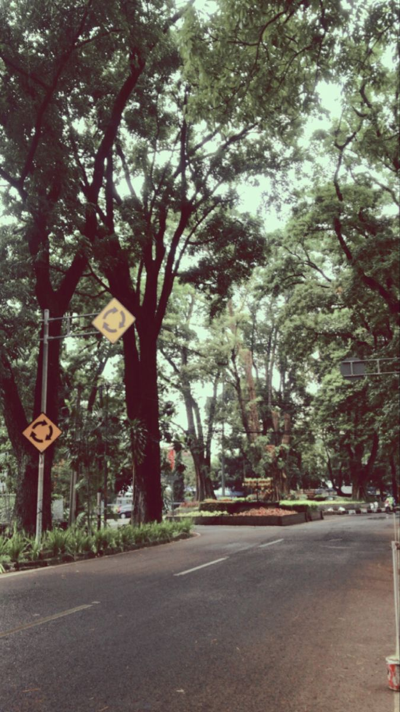
Beberapa hari kemudian, malam kian larut di kamar Rey. Asap rokok mengepul tipis, beradu dengan aroma kopi sachet. Rajib sedang duduk bersila sambil memeluk toples keripik pedas kesukaannya, wajahnya tampak sangat serius seolah sedang memecahkan rumus fisika nuklir. Rey, di sisi lain, masih setia dengan HP-nya, memoles detail logo.
"Gue udah nemu namanya, Rey. Ini final. Nggak bisa diganggu gugat," ucap Rajib tiba-tiba, memecah keheningan. "SEVENCULTURES: THE ARCHIVE."
Rey berhenti mengetik. Ia mendongak, menatap sahabatnya. "Panjang bener? Pake bahasa Inggris segala. Jelasin." Rajib mulai berorasi. Tangannya bergerak-gerak di udara, penuh gairah menceritakan dua pilar besar:
1. The Philosophy: "The Archive itu artinya kita bukan cuma jualan baju, Rey. Kita mendokumentasikan budaya. Desain-desain lu yang 'gila' itu adalah arsip zaman kita."
2. The Ambition: "Kenapa Seven? Ini visi bisnis gue! Kita harus menguasai 7 elemen outfit suci: Kaos, Hoodie, Jaket, Celana, Sepatu, Topi, Aksesoris."
Rey mengangguk-angguk, tampak mulai terkesan. "Tumben otak lu encer, Jib." Namun, perlahan senyum miring muncul di wajah Rey. Ia meletakkan HP-nya di lantai, lalu menatap Rajib dengan tatapan menyelidik yang jahil. "Tapi Jib... Yakin cuma itu alasannya?"
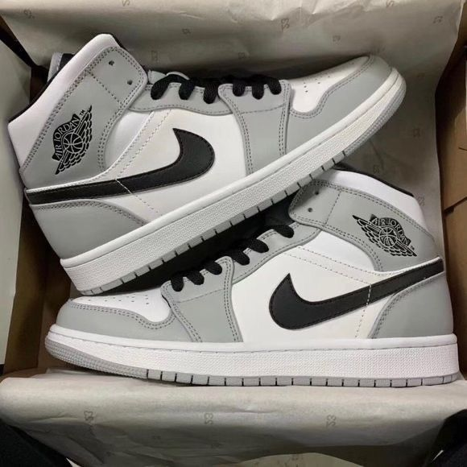
Rajib yang sedang asyik mengunyah segenggam keripik mendadak berhenti. "Mmhmm? Maksud lu?" Rey tertawa kecil, mulai melancarkan serangan: "Alah, teori sosiologi lu ketinggian. Jujur aja deh. Lu milih angka 7 pasti karena lu fans berat Cristiano Ronaldo (CR7) kan? Atau lu narsis karena ulang tahun lu kan tanggal 7 juga!"
"UHUK!!! UHUK!! OEK!!"
Rajib seketika tersedak. Remahan keripik pedas nyangkut di tenggorokan. Wajahnya memerah padam, matanya melotot berair, tangannya melambai-lambai panik mencari gelas air.
Rey tertawa terbahak-bahak melihat sahabatnya menderita, namun tetap menyodorkan gelas air. "Tuh kan kualat! Sok-sokan filosofi budaya, padahal mah biar hoki ulang tahun!"
Setelah menenggak air, Rajib akhirnya ikut nyengir pasrah. "Sialan lu, Rey. Tapi ya... bener juga sih. Angka 7 itu angka hoki gue. Biar rezekinya ngalir terus, Rey! Puas lu?!"
Arsip_Catatan: 07 Januari 2026. Nama brand resmi ditetapkan.
Laboratorium Gang Kecil
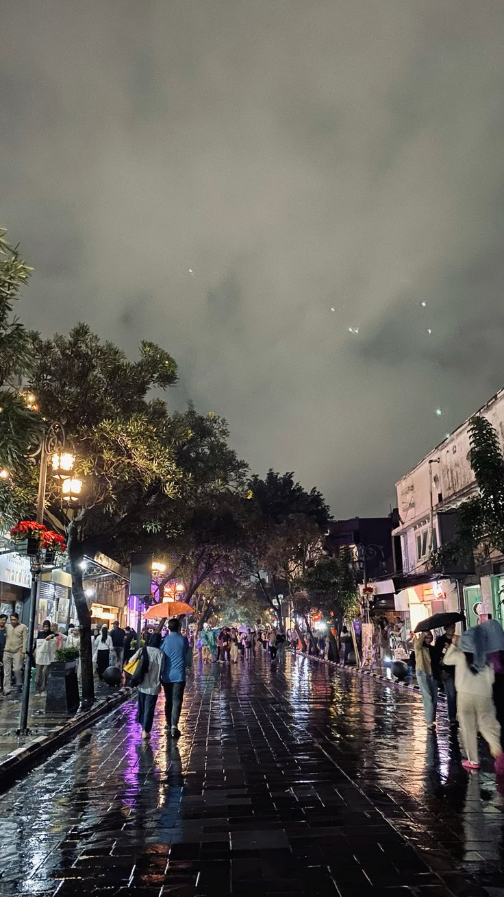
Perang Melawan Perangkat
Tahun 2026 datang membawa tantangan nyata. Euforia penamaan brand sudah lewat, kini saatnya kerja keras. Markas operasional mereka bukanlah ruko strategis, melainkan sebuah kamar di dalam Gang Kecik—sebuah gang sempit yang hanya muat satu motor, di mana sinar matahari terhalang atap rumah tetangga yang berdempetan.
Bagi Rey, tantangan terbesar adalah perangkat. HP orang tuanya yang ia pinjam bukanlah flagship terbaru. Setiap kali ia mengekspor desain dengan resolusi tinggi, HP itu memanas seperti setrika. "Ayo dong, jangan force close..." gumam Rey berkali-kali saat aplikasi desainnya macet di tengah jalan.
Ia belajar trik-trik gila. Memecah desain menjadi beberapa layer kecil agar tidak crash. Ia mendesain dengan zoom maksimal karena layar 6 inci terlalu kecil untuk melihat detail stroke. Matanya merah dan kepalanya pening, tapi ia menolak menurunkan kualitas. Baginya, Seven Cultures harus sesempurna brand besar yang menggunakan iMac.
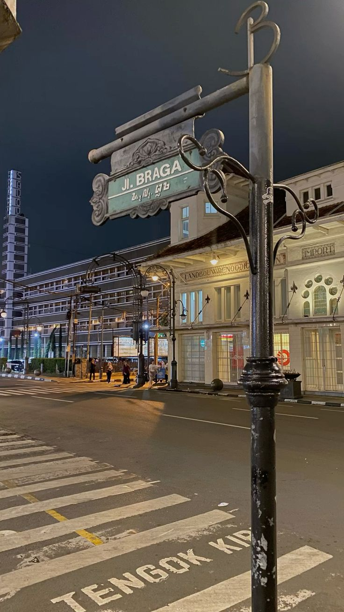
Diplomasi Jalanan
Sementara Rey bertarung dengan piksel, Rajib bertarung di jalanan. Ia berkeliling Bandung mencari vendor sablon dan konveksi. Mereka ingin kualitas Heavyweight 24s/20s dengan cutting boxy, tapi modal mereka hanya cukup untuk produksi lusinan kecil. Banyak vendor menolak mentah-mentah. "Wah, kalau pesen dikit mahal, Dek," kata mereka.
Rajib menelan semua penolakan itu. Ia meyakinkan vendor bahwa brand ini akan besar. "Tolong bantu kami di awal, Pak. Nanti kalau kami gede, kami pasti order ribuan," bujuknya. Akhirnya, mereka menemukan satu tempat sablon manual di garasi orang yang mau menerima idealisme mereka.
"Gila... desain dari HP gue... jadi nyata."
Bisik Rey saat mereka memeriksa sampel pertama di bawah lampu kamar yang remang-remang di Gang Kecik itu. Di tengah suara bising tetangga dan gerimis di luar gang, mereka sadar bahwa Seven Cultures bukan lagi sekadar omong kosong. Itu nyata.
Arsip Terbuka
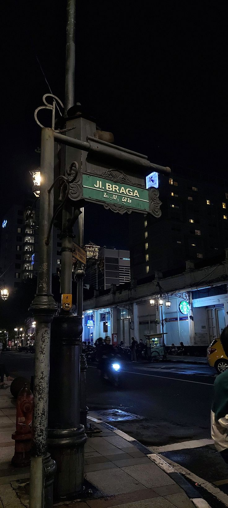
Februari 2026. Tepat dua tahun sejak ide awal muncul di tengah gerimis Braga. Sevencultures: The Archive resmi merilis koleksi pertamanya. Produk yang sampai ke tangan pembeli bukan sekadar kain; itu adalah bukti keras kepala Rey yang mendesain di layar retak, dan visi tajam Rajib yang menantang keterbatasan.
Mereka tidak menjual kemewahan palsu. Mereka menjual cerita: bahwa dari gang kecik di Bandung, dua sahabat dengan jalan hidup berbeda bisa bersatu menciptakan kultur baru. Kotak pandora telah dibuka, dan arsip ini baru saja dimulai.
Ringkasan & Katalog
Lulusan "Universitas YouTube & Google", mendesain pake HP, coding pake jempol.
Fashion Police, pemegang kendali QC, dan korban bully masalah ulang tahun.
The Holy 7 Goals
- Kaos: Heavyweight, Boxy Fit.
- Hoodie: Soon (Menunggu Dingin).
- Jaket, Celana, Sepatu, Topi, Aksesoris: Locked.
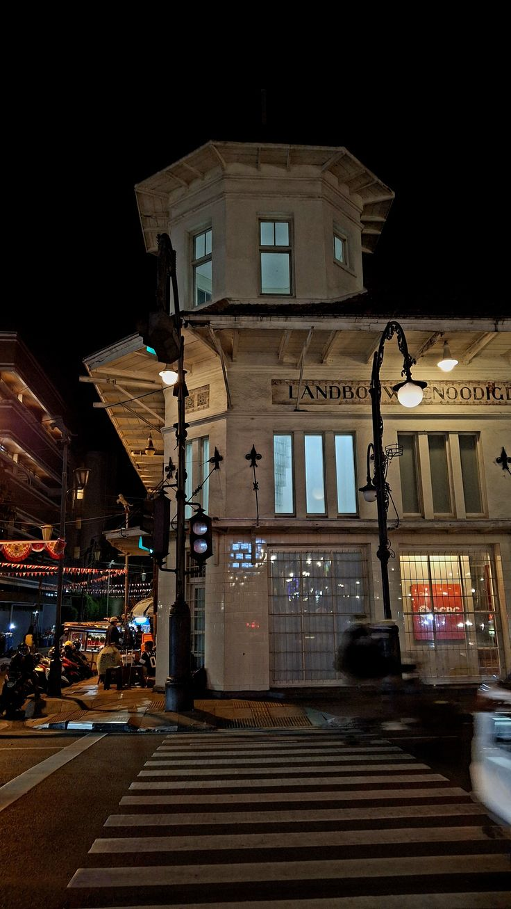
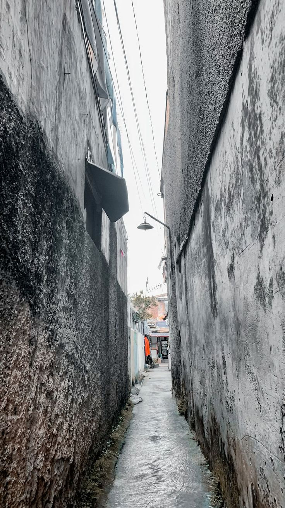